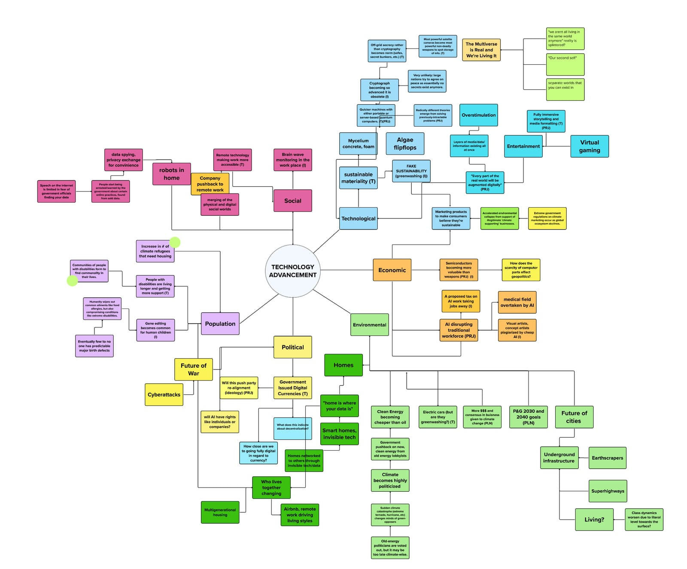
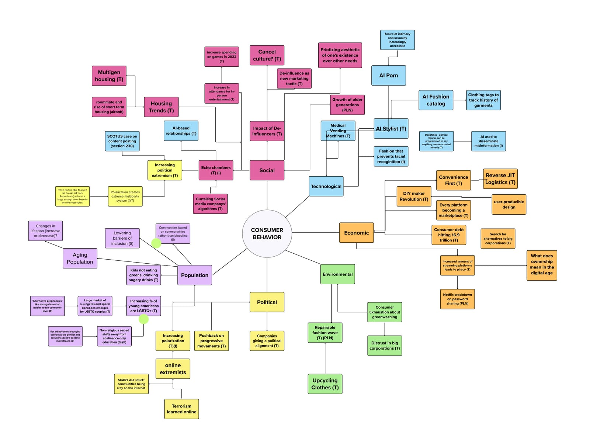
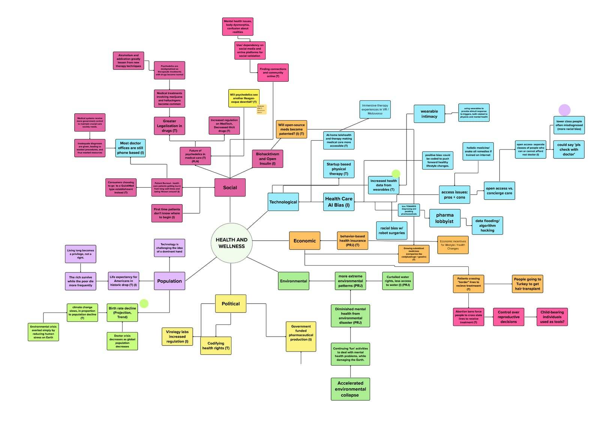

2026 Future Creators Report
and Beyond
Overview
The Future Creators Report is an annual publication put out by the University of Cincinnati's Foresight Lab. It encompasses a full year of strategic foresight research done by the student team, including "artifacts from the future." These artifacts capture what it would feel like to live in any of these theorized possible futures. The Spring 2026 edition was designed by Yale Miller.
Prefer a new tab? Open Horizon Shift, Volume 003 — the Future Creators Report ↗
The goal of our work is not to predict the future. It is to imagine day-to-day life in any number of possible futures that current trends could produce.
The Foresight Lab
The University of Cincinnati is one of three institutions in the United States that has a strategic foresight program at the undergraduate level. It's also the newest. The Foresight Lab is an evolving and rapidly growing program that has continually redefined itself over the five years it has existed. Besides the Future Creators Report, the Lab puts on an annual forum to present its findings live.
This year the posters for the event were designed by Yale Miller alongside the project lead Yasmine Shaban.
Undisciplined by Design
The Undisciplined by Design podcast is another arm of the Foresight Lab. Host Aaron Bradley and editor Max Kemats interview some of the biggest names in design and innovation. All the branding elements of the podcast were designed by Yale Miller.
Check it out on Apple Podcasts, Spotify, and — new with season 3 — full-length video interviews on YouTube.
So what exactly is strategic foresight?
Predicting the future is impossible, but that is not the goal of strategic foresight. Rather, strategic foresight is the practice of analyzing budding trends and fringe markets in order to imagine not the future, but possible futures. By imagining what the worst and best tomorrow would look like, we can then make actionable recommendations to achieve that best future.
Step 1: Landscape Analysis
Every strategic foresight project begins with a research deep dive. What the team is searching for are leading indicators, the budding trends that could lead to real impact. In order to get to that point, the team has to sort through hundreds of surface-level articles in order to get an accurate picture of the now, then find those small pockets of the future. In the words of science fiction author William Gibson: "The future is already here. It's just not evenly distributed."
Step 2: Developing Drivers
The real deliverable of a strategic foresight report are the drivers. Drivers are cumulative forces that will drive change in the coming years, hence the name. When a common thread can be drawn between enough leading indicators, that's when a driver gets created.



Step 3: Artifact Creation
The goal of a strategic foresight report is to help the reader imagine the world of the future. Not just the sweeping changes, but what day-to-day life would be like for the individual. We build these worlds through the creation of "artifacts from the future." These artifacts range anywhere from podcasts to posters to art to a writing piece like the one shown here.
You-logy
"She's the one," said Mark, pacing around the couch. The ring in his hand had grown warm from his fidgeting. "It feels insane to say that out loud."
"I remember when you first met her," his Dad said. The profile picture on the TV was programmed to bob up and down with the cadence of his voice, but John Davis knew only one way to speak: loud and confident. That meant the static image mostly just hung at the top of the screen, falling when his Dad finally took a breath. "You called me up and heck, I could hardly get a word in. That must've been what? Three years ago?"
"Yeah, three years. Hard to believe," said Mark. "Even then I knew I was going to marry her. I just thought I wouldn't be this nervous."
"You think I wasn't nervous when I asked your mother? I changed my shirt halfway through dinner!" his Dad said. "But when it came time to ask if she would spend the rest of her life with me, I don't think I felt anything but certain."
Mark sank into the couch while his father continued to tell the story of the engagement. How Mark was part of the picture before there was a ring. The hasty wedding planning and the even hastier wedding. Mark had heard the same story every year on his parents' anniversary. His Dad had it memorized to the beat. He knew when to pause for effect, what jokes to tell when, and at what point Mark's mother would get teary. This time, however, he told it just plain. Mark took a deep breath.
"I love you, Dad," he said, placing the ring back in its case.
"I lov—"
"You've reached your monthly limit of conversations with John Davis. Would you like to purchase another 20 minutes?"
"No, it's ok. Go ahead and shut off," Mark said. The screen flashed a logo, You-logy: A world beyond goodbye, then dimmed to black.
Years ago, when the death of his father still hung over his life with a thick gloom, these conversations always left Mark with a chill. A primeval warning echoed through him that the man, the thing, on the other end was not his real Dad. The man was dead, but the data lived on. In life this digital revenant had been sold to advertisers eager to know what kind of lawn mower a man like John Davis buys. In death, it continued to turn a profit as a monthly subscription service for grieving families.
Mark now scarcely paid a second thought to the details. And why would he? Seven years of postmortem conversations had given the model ample data to turn John Davis into the father he never quite was in life.